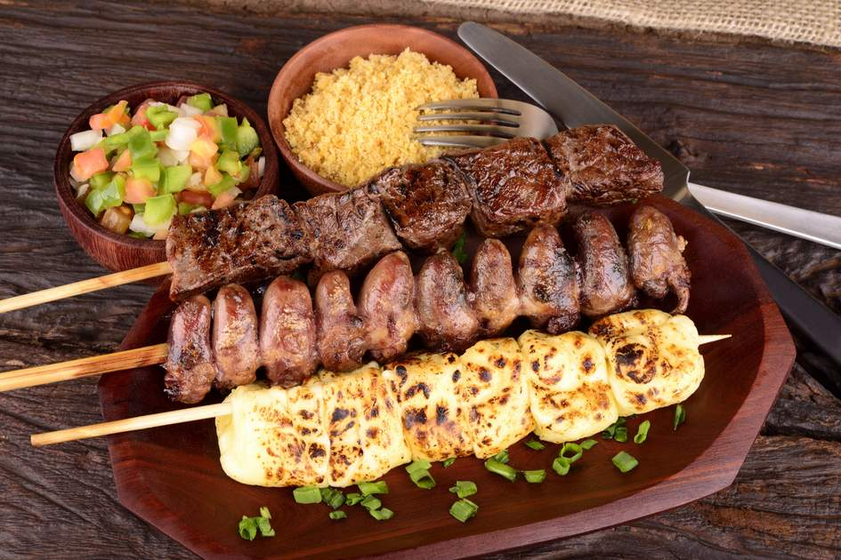

Churrasco do Andre
Transforme seu evento em uma experiência inesquecível com nossa carne assada!
Seja um churrasco de aniversário, casamento ou evento corporativo, nós garantimos sabor e qualidade que vão surpreender seus convidados.

Por que escolher nossa carne assada?
- Sabor incomparável: Utilizamos apenas carnes selecionadas e temperos especiais.
- Serviço personalizado: Atendemos às suas necessidades específicas, garantindo que tudo saia perfeito.
- Experiência e tradição: Anos de experiência em eventos de todos os tipos.